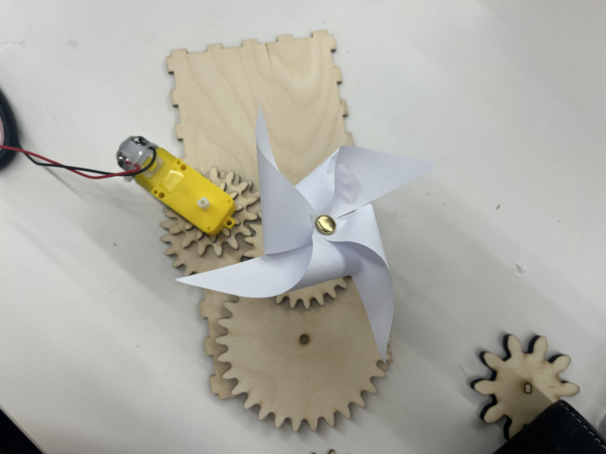

<div class="textcontainer">
<p class="margin"> </p>
<h3>Week 3: Hand Tools and Fabrication</h3>
<p class="margin"> </p>
<p class="margin"> </p>
<h4>Kinetic Sculpture</h4>
<p class="margin"> </p>
For this week's project, I built a motor powered pinwheel kinetic sculpture that spins forever. I was able to 3D print gears and attach a motor that would create a nonstop spinning motion. The pinwheel was made of paper attached by a through pin and then attached to the outer side of the main gear through connection to a 3d printed dowel. This project was really cute as pinwheels are one of my favorite things.
<p class="margin"> </p>
<p class="margin"> </p>
**Design File**
<a href="gearshuman.f3d" download style="display:inline-block; padding: 8px 16px; background:#384959; color:white; border-radius:6px; text-decoration:none; margin: 0.5rem 0;">
Download Gear File (.f3d)
</a>
<p class="margin"> </p>
<p class="margin"> </p>
<p></p>
<p class="margin"> </p>
<p class="margin"> </p>
Here's a short video of the pinwheel in motion:
<p class="margin"> </p>
<video controls style="max-width:50%; margin: 1rem 0; border-radius: 8px;">
<source src="pinvid.mov" type="video/mp4">
Your browser does not support the video tag.
</video>
<p class="margin"> </p>
</div>